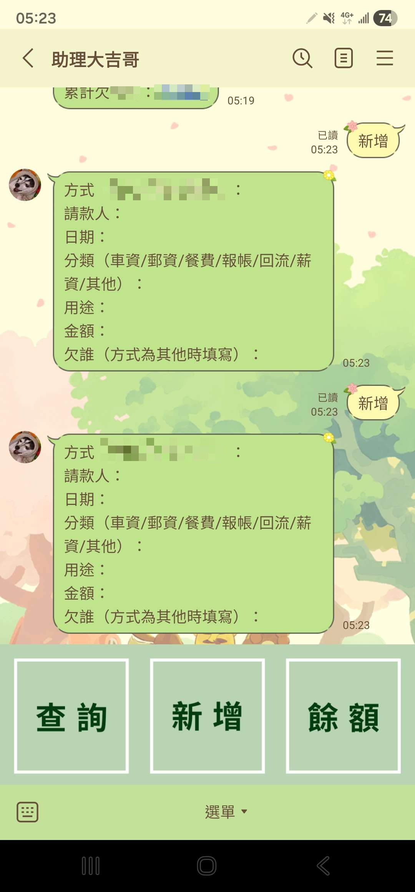
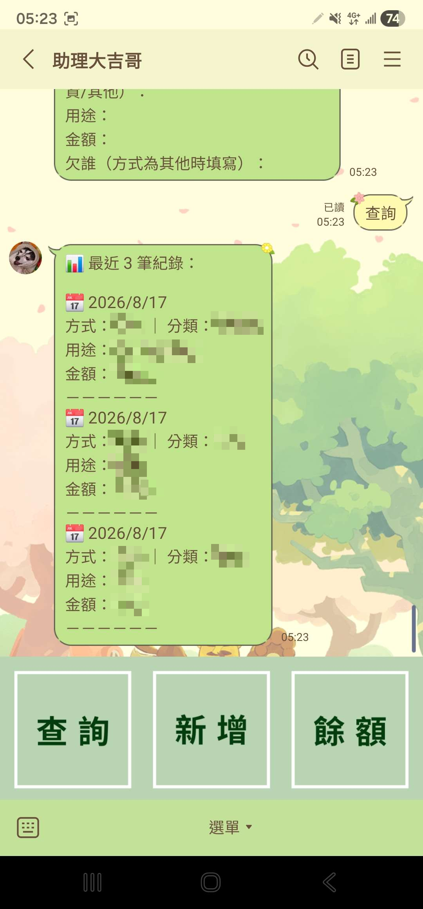
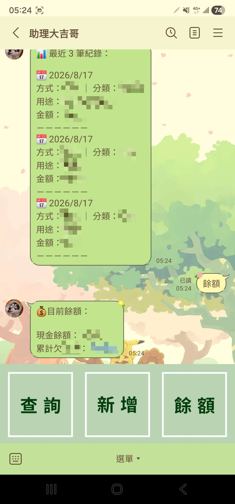

目錄
首頁
簡報製作
程式專案
▾
linebot
streamlit-pandas
MySQL資料分析
遊戲建築設計
▾
早期作品
楓葉主題
大型建築
LINE Bot
行政流程改善工具
背景與問題
實驗室行政工作依賴 Google 表單和 Excel
資料需根據不同類別分類和管理
每次填寫 Google 表單需要 30s–1min
查看資料時需切換到 Excel
解決方案
開發 LINE Bot 整合表單填寫與資料查詢
使用者在 LINE 直接輸入資訊，自動同步到 Excel
新增查詢及餘額查詢功能，單一介面查看所有資料
成果
20s
作業時間
（原 30s–1min）
統一
介面整合
不再切換表單與 Excel
自動
智能分類
根據內容自動歸類
即時
資料查詢
變更立即反映

新增記錄
複製後將資料輸入即可

查詢記錄
能查詢最近3筆輸入

餘額查詢
使用技術
滑鼠懸停可查看細節
LINE Messaging API
Python
Render
Cron Job
Claude